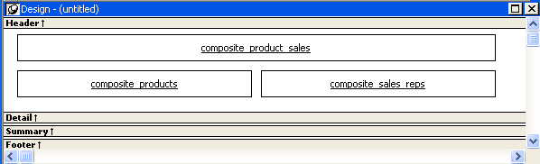
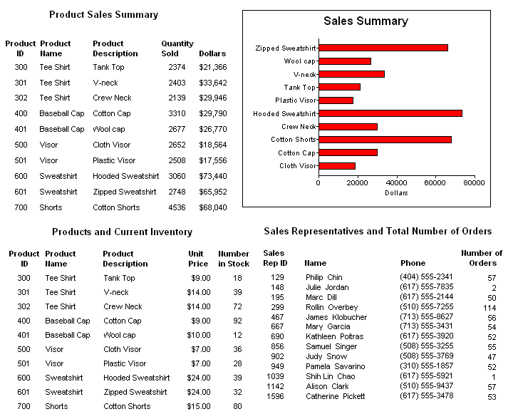

To create a report using the Composite presentation
style:
To create a report using the Composite presentation
style:
Select File>New from the menu bar.
The New Report dialog box displays.
Choose the DataWindow tab page and the Composite presentation style, and click OK.
The wizard displays all reports (DataWindow objects) that are in the current target's library search path.
Click the reports you want to include in the composite report and then click Next.
The wizard lists your choices.
Click Finish.
PowerBuilder places boxes for the selected reports in the Design view. In this example, you see three reports:

Select File>Save from the menu bar and assign a name to the composite report.
Look at the Preview view of the report:

Notice that you are in print preview (which is read-only).
 Working with composite reports Many of the options available for working with reports, such
as Rows>Filter, Rows>Import, and Rows>Sort,
are disabled for a composite report. If you want to use any of these
options, you need to access the nested report(s), where these options
are available.
Working with composite reports Many of the options available for working with reports, such
as Rows>Filter, Rows>Import, and Rows>Sort,
are disabled for a composite report. If you want to use any of these
options, you need to access the nested report(s), where these options
are available.
Continue to enhance the composite report (for example, add a date and title).